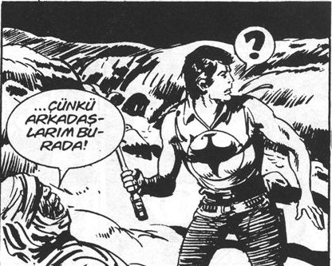

Hava biraz kapalıydı, neredeyse yağmak üzereydi. Hıdır Azgören, 42 yaşında bir devlet memuruydu. Bakanlığa baktığınızda onun kadar düzenli, disiplinli, işini mevzuatına göre yapan başka bir memur göremezdiniz.
Beş takım elbisesi her zaman jilet gibi ütülüydü. Hafta içi her gün birisini giyerdi; günleri de belliydi. Dördü koyu renk lacivert ve siyaha yakın renkteyken, tek kahverengi takımını cuma günleri giyerdi. Kıyafetlerinin hepsi markasızdı ve hepsini eniştesi Zinnur Barışık’ın, Barışık Mefruşat mağazasından, maliyet fiyatına taksitle almıştı. Disiplini ve mevzuata hâkimiyeti bakanlıkta herkesçe bilinmesine rağmen, 42 yaşında hâlâ sıradan bir görevdeydi.
Oysa devlet mevzuatından hiç anlamayan sürüyle adam, daire başkanı, müsteşar, genel müdür yardımcısı, şef gibi görevlere gelmişlerdi.
Aslında bu görevlere gelenler genelde iki-üç yıl görevde kalıyor, sonra hükümet değiştiğinde görevden alınıyor, yeni gelen hükümet yanlıları bu makamları dolduruyordu.
Hıdır Azgören’in hiç politik görüşü olmamıştı. Tek bir beklentisi vardı, en azından şef olabilmek.
Bir gün eve “Ben şef oldum!” diyerek girmek için yapamayacağı yoktu doğrusu. Bu yüzden dil öğrenmek için çok çaba gösteriyordu. KPDS’ye her sene hazırlanıyor, hep baraja yakın bir puanda kalıyordu. En son 66 almıştı. Bu sene dört puan daha alırsa gelsin dil tazminatı, gelsin şeflik.
Bugüne kadarki tek başarısı, Milliyet Pazarlama’dan dört yıl taksitle aldığı, 91 model beyaz Şahin arabaydı.
Belki burada biraz mola vermemiz gerekecek. Beyaz Şahin derken, üzerindeki her şeyi orijinal, 14 yıl içinde boyasında hiç çizik olmayan, 1.6 motor ve 7.000 km’de bir arabadan bahsediyoruz.
Hıdır, akşam eve gelir gelmez apartmanın arka bahçesindeki kömürlüğe iner, arabasına şöyle bir dokunurdu; sonra özenle kapıyı açar, arabayı bir dakika çalıştırır, kömürlükten dışarı bir çıkarır, ardından sağ kolunu geriye atar, aracı geri geri kömürlüğe sokardı. Kömürlük dediğimize bakmayın, bayağı bir garaj olmuştu. Tamir kitleri, bembeyaz boyalı bir duvar, duvarda arabayla, eşiyle ve ufaklıkla çekilmiş fotoğraflar... Fotoğraflar neredeyse iki yıl arayla çekilmiş altı taneydi. İlk fotoğraflar, evlilik, arabanın alınışı, eşiyle, gülümseme dolu, çiçek, elma kokulu fotoğraflar.
Son yıllara doğru gülümsemeler daha azdı. Sadece kızları Nisan’ın gülümsediğini fark etti. Bir de son dört yıldır hiç fotoğraf çektirmediklerini. Yüksek sesle:
– Yeni fotoğrafın zamanı geldi, dedi.
Kömürlüğü kilitledi.
Eve doğru yürüdü, kapıcı Ferhat Efendi’yle selamlaştılar.
İlginç adamdı Ferhat Efendi, ona belki ileride değiniriz.
Gece geç saatlerde kentin şık restoranlarına seksi genç modellerle yaptığı ziyaretler veya “yıkım ekibi” olarak adlandırdığı gürültücü bir borsacılar grubuyla pervasız içki kaçamakları firmada efsane haline gelmişti.[1]
